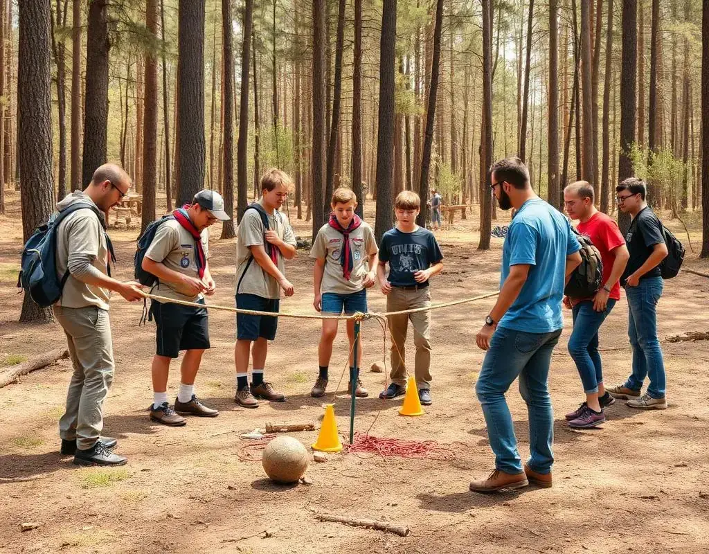
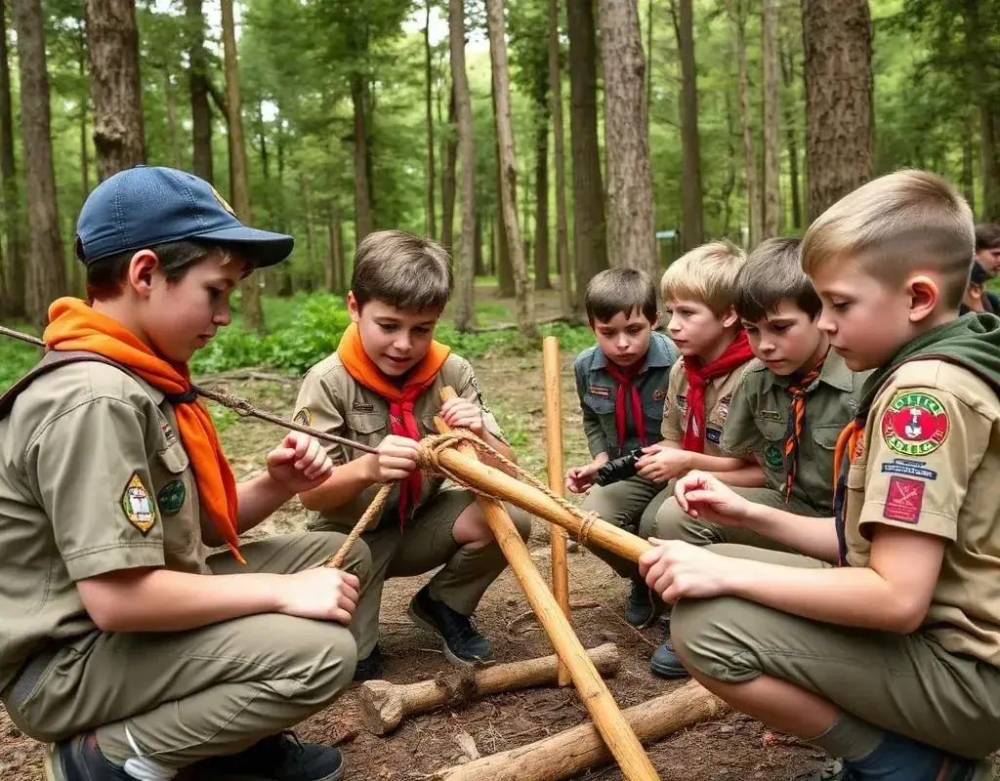
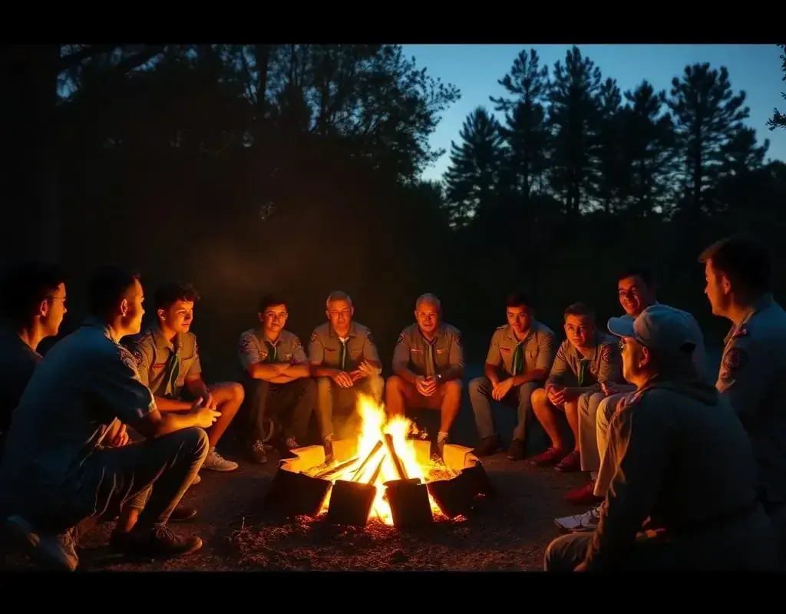
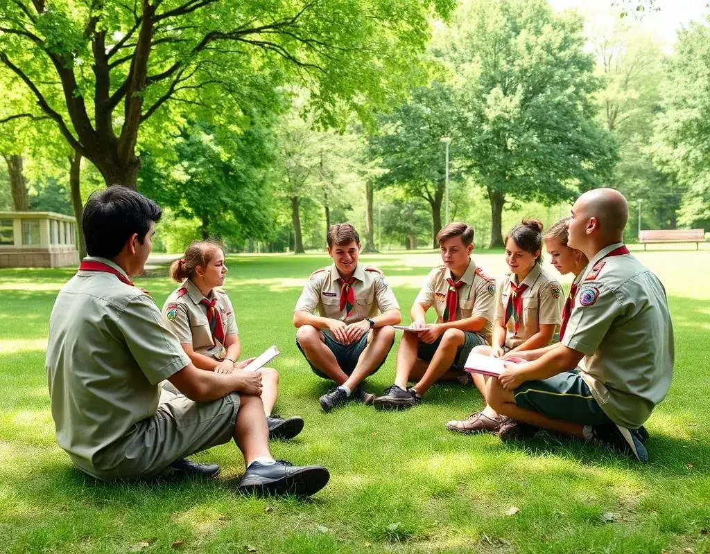
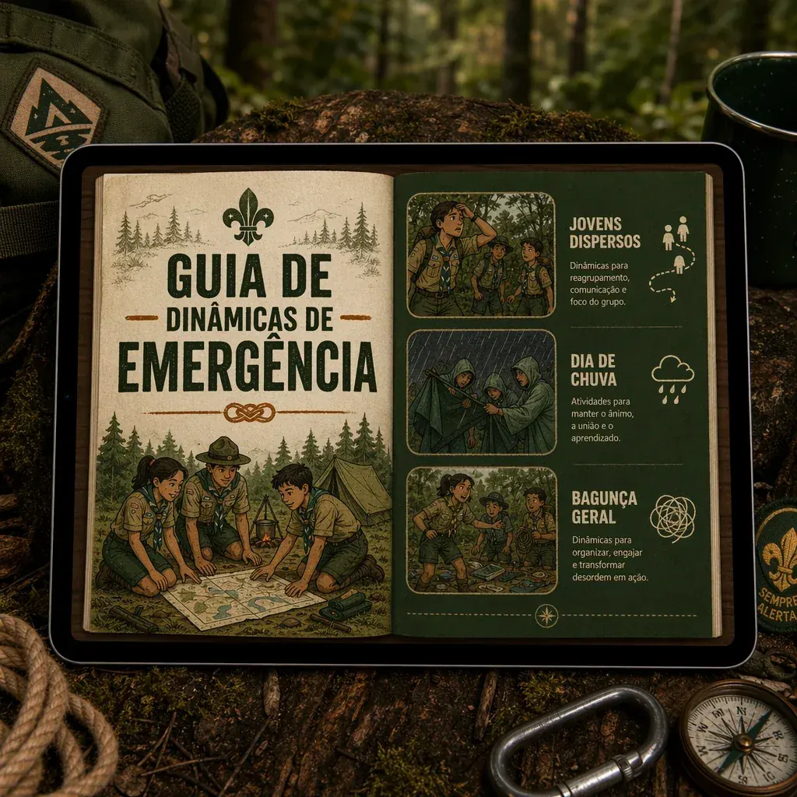
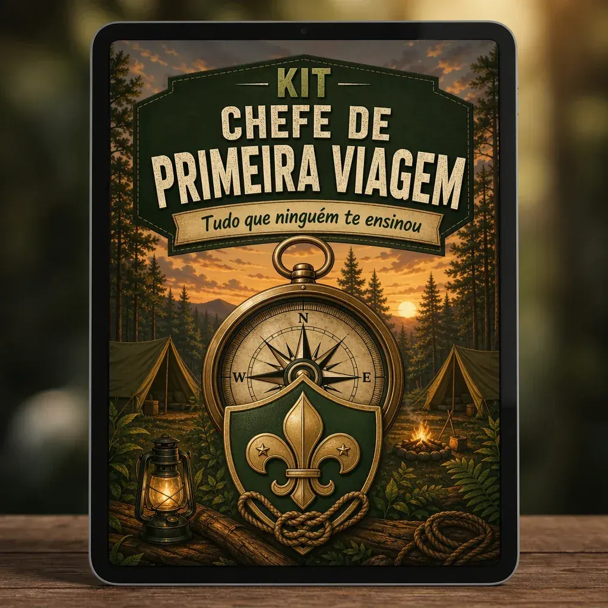
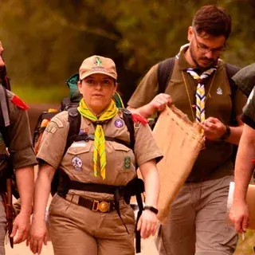

📄
Videoaulas + Material de Apoio em PDF
- +250 dinâmicas escoteiras explicadas de forma prática
- Conteúdo organizado por ramo, tema e tipo de atividade
- PDF de apoio para consultar antes da reunião
- Assista, revise e aplique com mais segurança
Organizadas por idade e nível da tropa — é só abrir, escolher e aplicar em minutos
Lobinhos (7 a 10 anos)
Escoteiros (11 a 14 anos)
Sêniores (15 a 17 anos)
Pioneiros (18 a 21 anos)
Quebra-gelo e Integração
Atividades ao Ar Livre
Técnicas Mateiras
Cidadania e Valores
Espiritualidade Escoteira
✓ Linguagem simples e direta
✓ Materiais comuns na rotina da sede
✓ Preparo mais rápido e organizado
✓ Objetivo educativo claro em cada dinâmica
Conteúdo revisado, ampliado e pensado para a realidade do movimento escoteiro atual.
Confira alguns exemplos das +250 dinâmicas prontas para usar em reuniões e atividades
Atividades para quebrar o gelo e aproximar a tropa no início do encontro.

Jogos para estimular liderança, tomada de decisão e trabalho em equipe.

Atividades práticas para trabalhar habilidades ao ar livre com mais organização.

Roteiros e ideias para momentos simbólicos, participativos e bem conduzidos.

Dinâmicas para trabalhar valores, propósito e aprendizado de forma leve.
Dinâmicas comentadas, práticas e seguras para usar em sedes, acampamentos e encontros do grupo.
Você lê, separa os materiais e entende como conduzir a atividade sem depender de improviso.
Atividades que ajudam a estimular atenção, cooperação e valores escoteiros de forma leve.
Ideal para chefes que têm uma rotina cheia e ainda se dedicam ao movimento escoteiro.
VALOR TOTAL DE R$ 151,00 — HOJE VOCÊ RECEBE GRÁTIS

🎁 Bônus 01
De R$67,00 por ZERO
Para quando a reunião sai do plano. São 20 dinâmicas rápidas para situações comuns:
🎁 Bônus 02
De R$47,00 por ZERO
5 roteiros prontos para ajudar a conduzir momentos importantes da tropa:

🎁 Bônus 03
De R$37,00 por ZERO
Um guia direto para quem está começando ou quer conduzir as primeiras reuniões com mais segurança:
Escolha o plano que faz mais sentido para a sua rotina
De R$ 27,90
custo único
O Plano Premium inclui mais dinâmicas, atualizações e os 3 bônus exclusivos.
De R$ 297,00
Hoje pagamento único
Ou 6x de R$ 5,49 no cartão
+2.157 chefes e instrutores já usam o material em suas atividades
Clique no botão abaixo para acessar o material completo ↓
QUERO O PREMIUM COMPLETOA partir de o preço será reajustado.
Você tem 7 dias de garantia incondicional. Se o material não fizer sentido para a sua rotina, basta solicitar o reembolso dentro do prazo e devolvemos 100% do valor.
🛡️ COMPRA 100% SEGURA🛡️ ACESSO IMEDIATO🛡️ SATISFAÇÃO GARANTIDAO que os chefes que já usam o material estão dizendo
"As dinâmicas me ajudaram muito no preparo das reuniões. Hoje consigo organizar melhor as atividades e envolver mais os jovens."
"O material é bem prático para o ramo lobinho. As atividades são lúdicas e ajudam a trabalhar valores de um jeito natural."
"Gostei porque fala a linguagem do movimento. É direto, organizado e facilita bastante na hora de planejar a atividade."

Somos apaixonados pelo escotismo e pela educação não formal. Criamos este material para apoiar chefes e instrutores no planejamento de reuniões mais práticas, organizadas e conectadas aos valores do movimento.